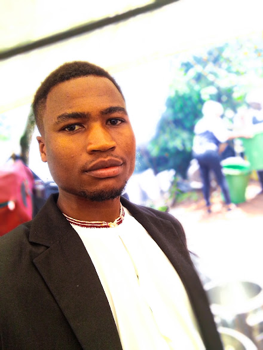

WANYAMA EDGAR | WDD 130

My name is Wanyama Edgar, and I am pursuing a degree in Software Development at BYU-Pathway Worldwide. I am passionate about creating innovative software solutions and constantly expanding my technical skills. My primary hobby is learning new programming languages and exploring different frameworks. I believe that mastering multiple languages provides a broader perspective on problem-solving and helps me adapt to various development environments. Through this course, I aim to build a strong foundation in web development and contribute meaningfully to the tech community.